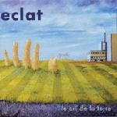

| Artist: | Eclat |
| Title: | Le Cri De La Terre |
| Label: | Musea FGBG 4442.AR |
| Length(s): | 45 minutes |
| Year(s) of release: | 2002 |
| Month of review: | [05/2002] |
| 1) | Le Cri De La Terre | 5.52 |
| 2) | Eternite | 4.33 |
| 3) | Tri-un | 5.11 |
| 4) | La Vie Du Sonora | 6.50 |
| 5) | La Porte... | 1.56 |
| 6) | Mr Z | 6.16 |
| 7) | Energies | 2.51 |
| 8) | Horizon Poupre | 6.32 |
| 9) | Aurora Boreale | 4.32 |
Eternite features a church choir, giving it a solemn start, which is washed away by the strong guitar, pushing up the tempo of the track. The intermezzo is carried by keys with guitar across, retaining the peacefulness of the choir. After this, of course the return to the guitar melody. Still, the overall feel is more melodic than rocky.
Tri-un has the kind of celtic feeling the title might suggest, helped by the use of the violin. The guitar in this track is pretty strummy, sowing the small solos together into a pretty much jazz structured whole. Still the track has a nice flow, with some complexities but a melody as well.
La Vie Du Sonora is the only vocal track of the album. Chiarazzo has a shrill quality, and since the vocal parts are really centered around that voice, these aren't exactly great. The track is finished by a lengthy guitar solo, trying for salvation, but failing in its jazzrocky quality.
La Porte... is a piece for piano. Nice and friendly, not all that striking.
Mr Z is slow guitar piece, more melodic than it is technical.
Energies starts a somewhat neurotic guitar piece, sounding not too bad, but the addition of keys doesn't exactly help. The sense of urgency stays, but the keys are pretty abrassive.
Horizon Poupre starts pretty strong, although the bass line is remarkable close to Mission Impossible. The violin gives the track an ethnic atmosphere. The organ seems to refer to Keith Emerson, making the start of the track into a hodgepodge of different influence which sounds pretty nice. As the track moves along the guitar and keys take over, helped by choppy drumming, giving a very basic jazzrock feeling.
Aurora Boreale gives the album a friendly ending, with keys almost reminiscent of early Yanni (that's when he wasn't sappy yet), with a purring bass in the background.